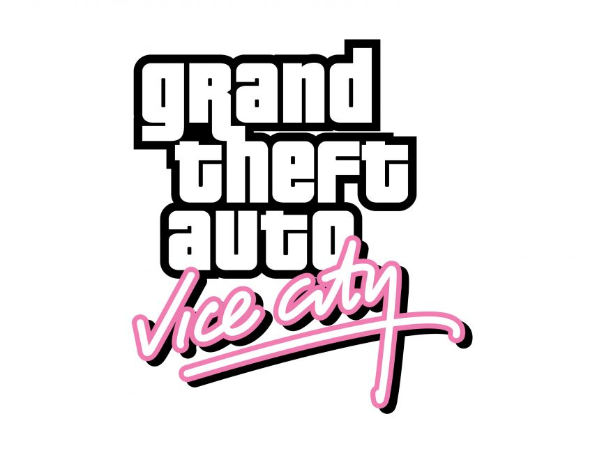

Welcome to Learning Ladder!
The featured games below in the Home page contain information about video games which were of great relevance in the early 2000s. Seat back and read through some of the games that are cherished childhood memories of children all around the world!

Super Mario Galaxy
This is a short description of Super Mario Galaxy taken from Wikipedia
Super Mario Galaxy is a 2007 platform game developed and published by Nintendo for the colsol Wii. It is the third 3D game in the Super Mario series. As Mario, the player embarks on a quest to rescue Princess Peach, save the universe from Bowser, and collect 120 PR, after which the player can play the game as Luigi for a more difficult experience. The levels consist of galaxies filled with minor planets and worlds, with different variations of gravity, the central element of gameplay. The player character is controlled using the Wii Remote and Nunchuk and completes missions, fights bosses, and reaches certain areas to collect PR. Certain levels use the motion-based Wii Remote functions.Super Mario Galaxy has received critical acclaim, becoming the sixth-highest-rated game of all time.The visuals and presentation were the most praised aspects of the game.The gameplay, in particular the gravity mechanics and use of the Wii Remote, along with the soundtrack, was also praised.
The Sims
This is a short description of The Sims taken from Wikipedia
The Sims is a social simulation video game developed by Maxis and published by Electronic Arts in 2000. The game allows players to create and control virtual people, called “Sims”, and manage their daily lives in a suburban setting. The game features an open-ended gameplay, where players can choose their own goals and objectives, and customize their Sims’ appearance, personality, skills, relationships, and environment. A series of expansion packs were also released that add new content and features to the game, such as new careers, items, locations, and scenarios. The Sims garnered widespread critical acclaim and was described by Wright as being successful in attracting casual and female gamers.The game has also been commercially successful, being one of the best-selling PC games of all time with 11.5 million copies sold.
Grand Theft Auto: Vice City
This is a short description of Grand Theft Auto: Vice City
Grand Theft Auto: Vice City is a 2002 action-adventure game developed by Rockstar North and published by Rockstar Games.The game is played from a third-person perspective and its world is navigated on foot or by vehicle. The open world design lets the player freely roam VC, consisting of two main islands. The game's plot is based on multiple real-world people and events in Miami such as Cubans, Haitians, and biker gangs, the 1980s crack epidemic, the Mafioso drug lords of Miami, and the dominance of glam metal. The game was also influenced by the films and television of the era, most notably Scarface and Miami Vice.Upon its release, Vice City received critical acclaim, with praise particularly directed at its music, gameplay, story, and open world design. However, the game also generated controversy over its depiction of violence and racial groups, sparking lawsuits and protests.